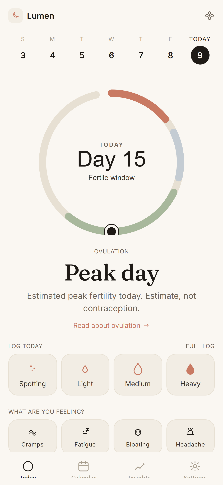

A calm, private app that learns your cycle and stays out of your way. Local-only. No accounts. No servers. No advertising.

Open the app on a period day, tap the ring, you're done. Symptoms, mood, BBT, mucus, sex log, medications, notes — all there when you want them.
Predictions show a window, not a fake-precise single date. The band tightens as Lumen learns your pattern, and widens when your cycles shift.
Symptom patterns across the cycle, regularity scores, BBT charts, cycle history. Built from your actual data, not generic averages.
Send predicted period and fertile windows to iOS Calendar, Google Calendar, or Outlook. One file, .ics, fully offline.
A printable, monochrome 12-month summary for your GP — cycles, symptom clusters, mood share, medications.
A read-only, time-limited snapshot, generated on your phone. No account on either side. Expires after 14 days.
Lumen is built around a simple principle: the safest place for your cycle data is your own device. So that's where we leave it.
Cycle tracking with predictions, fertile-window estimates, and the full feature set.
Friendlier copy and a Learn tab with body-literacy explainers — cycle basics, first periods, cramps, mood, fertile window, iron, privacy.
Cycle predictions pause. Home shows weeks-pregnant from your last menstrual period.
Wider, honest prediction windows that reflect rising cycle variability.